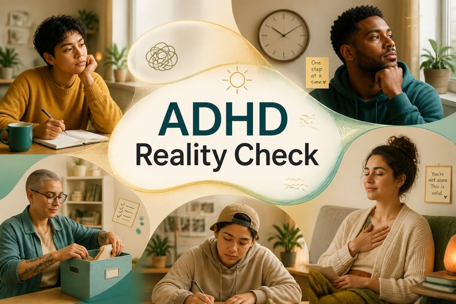
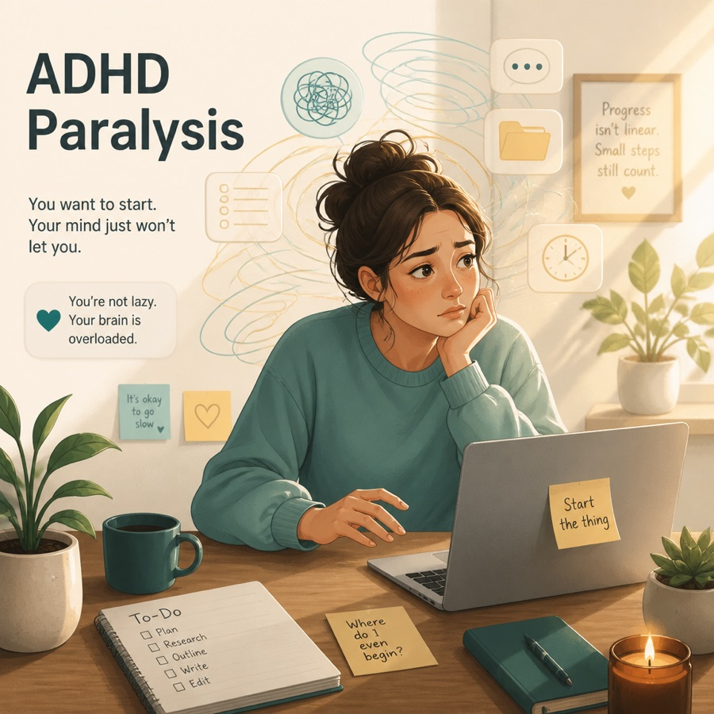
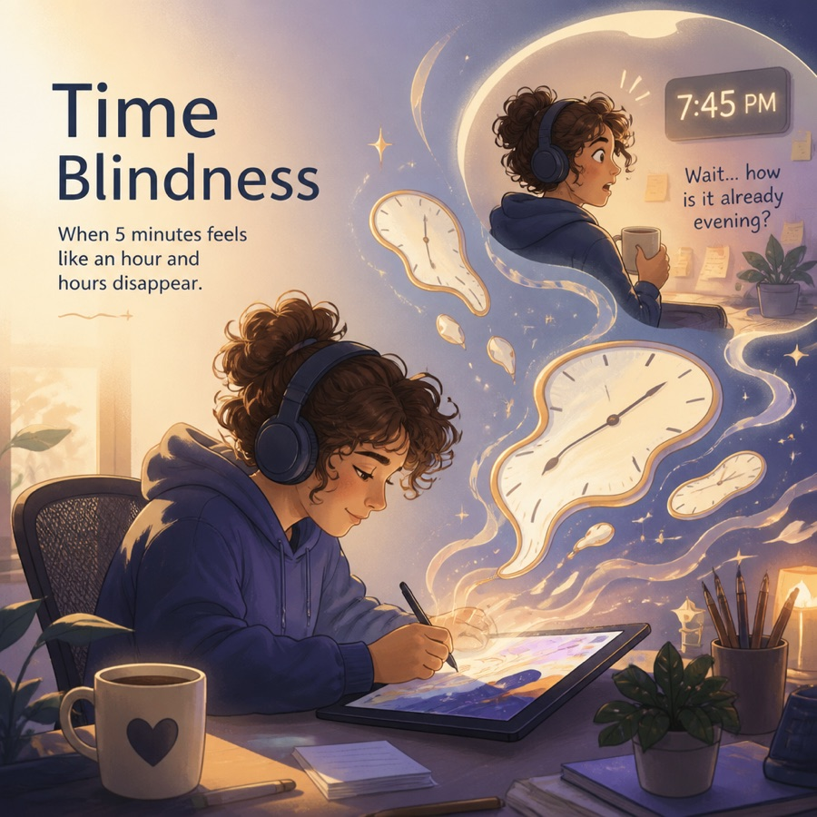
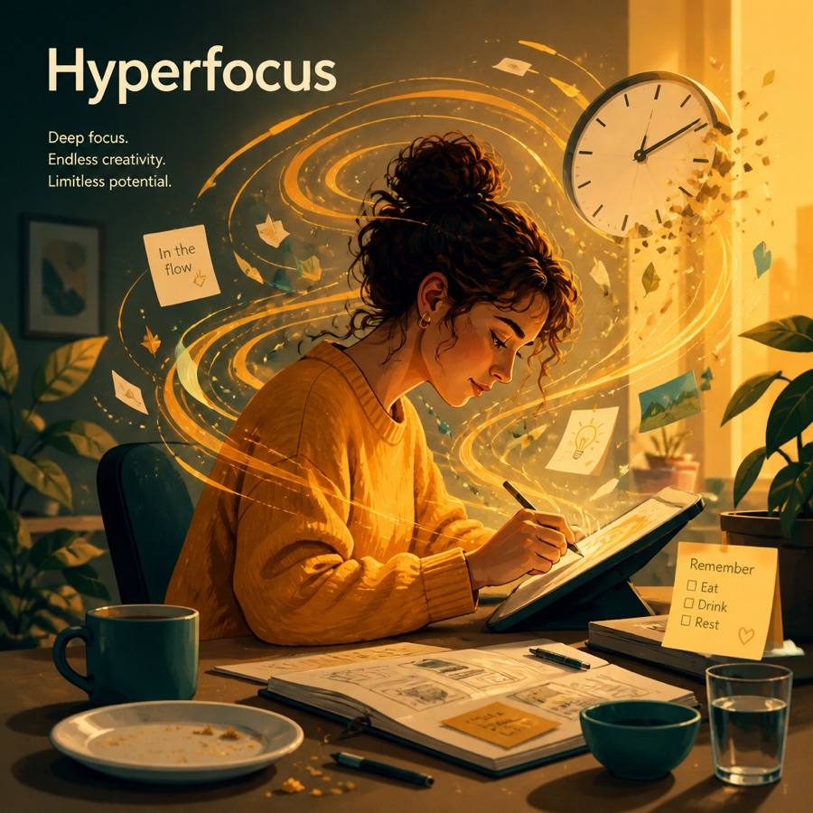
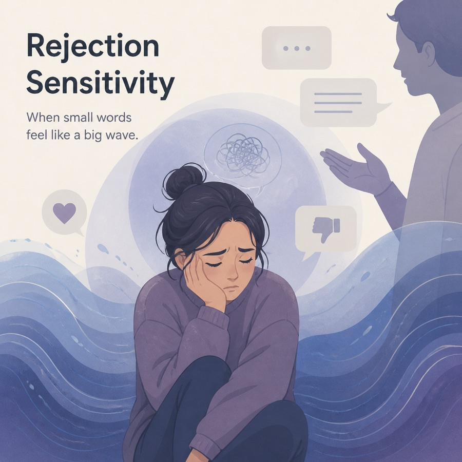
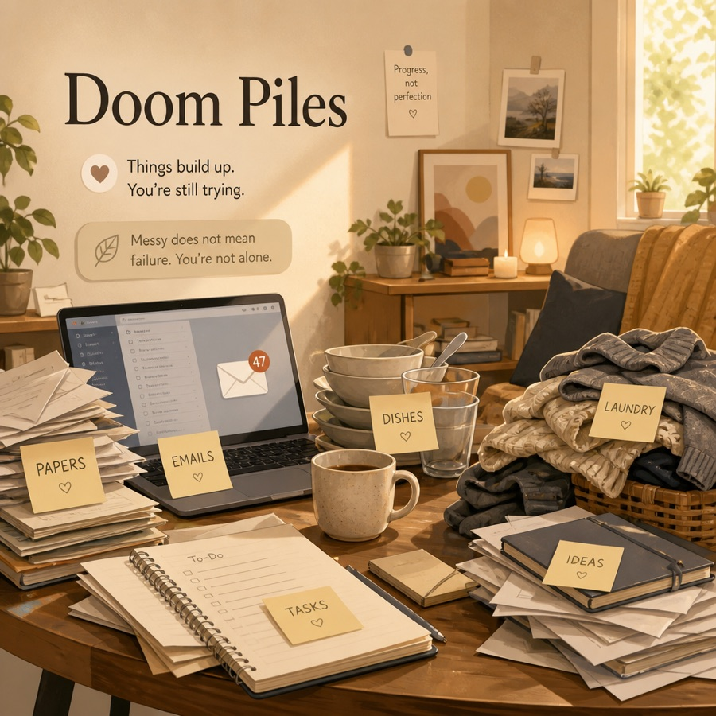

דפוס 01
חוסר קשב
הדפוס השקט שקל לפספס. הקשב נודד והפרטים נשמטים.
- מאבד מיקוד ומפספס פרטים
- שכחן ולא מאורגן
- נמנע ממאמץ מנטלי מתמשך
- לעיתים קרובות מתואר כ«מרוחק» או «עצלן»
כל מה ששווה לדעת על הפרעת קשב, ריכוז והיפראקטיביות במקום אחד — המדע, הסימנים, הנתונים, סימני האזהרה, והאסטרטגיות המעשיות שעושות הבדל אמיתי.
עניין ומוטיבציה מובילים את המיקוד יותר מחשיבות — ומכאן נובע היפר-מיקוד במשימות מסוימות והיעדרו כמעט מוחלט באחרות.
זה לחינוך, לא לאבחון. אי אפשר לאבחן ADHD אלא על ידי איש מקצוע מוסמך. שום דבר כאן — כולל הבדיקה העצמית — אינו הערכה רפואית או תחליף לטיפול מקצועי. אם אתה מוצא שמשהו מכאן מתאים לך, הצג זאת בפני רופא, פסיכולוג או פסיכיאטר.
הצצה קצרה לחוויה.
רגעים יומיומיים שאולי דומים למציאות שלך — הצטברות של בלגן, עיוורון זמן, שיתוק משימות, היפר-מיקוד. אם משהו מהם מוכר: אתה לא תקול, ואתה לא לבד.






עלוני PDF ידידותיים להדפסה ומעקבים למילוי — שמור אותם, שתף אותם, או קח עותק ממולא לפגישה שלך. הכול חינם.
לחץ על כל חלק כדי לעבור אליו ישירות.
הפרעת קשב, ריכוז והיפראקטיביות (ADHD) היא מצב נוירו-התפתחותי המשפיע על האופן שבו המוח מווסת קשב, דחפים והכוונה עצמית. שורשיו בהבדלים באיתות הדופמין וברשתות התפקוד הניהולי במוח — לא באינטליגנציה, במאמץ או בחינוך. הוא מופיע בשלושה דפוסים מוכרים.
הדפוס השקט שקל לפספס. הקשב נודד והפרטים נשמטים.
הדפוס המתוח שפועל קודם. האנרגיה והדחף מקדימים את הבלמים.
הדפוס הנפוץ ביותר — מאפיינים בולטים משני הדפוסים יחד.
ADHD נחשב לאחד המצבים הנחקרים ביותר בפסיכיאטריה. המספרים למטה הם הערכות הסכמה שנגזרו ממטא-אנליזות גדולות ומקורות אבחון — טווחים ולא מספרים מדויקים, כי השכיחות תלויה באיך ואיפה מודדים.
«חוסר קשב» הוא שם מטעה. הקושי המרכזי הוא ויסות עצמי — מערך כישורי הניהול במוח שהופך כוונה לפעולה. כשהוא עובד אחרת, הידיעה מה צריך לעשות מתנתקת מעשיית הדבר בפועל.
החזקת מידע «פעיל» מספיק כדי להשתמש בו — הוראות, שלבי משימה, הסיבה שנכנסת לחדר.
העצירה בין הדחף לפעולה. סינון הסחות, התנגדות לסטייה, ולא להיחפז לדבר.
היציאה לדרך — הקיר בין «צריך» להתחלה, אפילו בדבר שאתה רוצה לעשות.
«עיוורון זמן» — תחושה חלשה של משך הדברים ושל הזמן שחלף. עכשיו מול לא-עכשיו.
ניהול עוצמת הרגשות ומשכם. תסכול, דחייה והתלהבות מורגשים בעוצמה גדולה יותר.
החלפת הילוך, מעבר בין משימות, והסתגלות כשהתוכנית משתנה בלי להיתקע או להיות מוצף.
על תחלואה נלווית: ADHD ממעט להגיע לבדו. חרדה, דיכאון, הפרעות שינה וקשיי למידה (כמו דיסלקציה) הם מלווים נפוצים — וזו אחת הסיבות לכך שאבחון עצמי אינו אמין וההערכה המקצועית חשובה.
המספרים משקפים הערכות ממקורות הכוללים DSM-5-TR, הפדרציה העולמית ל-ADHD ומטא-אנליזות שפורסמו. התייחס אליהם כאל כיוון כללי ולא כדיוק מוחלט.
ADHD מאובחן קלינית — אין בדיקת דם, צילום או מבחן ממוחשב מדויק דיו לאבחנו לבדו. איש המקצוע המיומן משלב בין השיטות האלה:
התסמינים מותאמים לקריטריונים הרשמיים: 6 תסמינים מגבילים או יותר של חוסר קשב או של היפראקטיביות ואימפולסיביות (5 או יותר מגיל 17), בשני תחומים או יותר, שמתחילים לפני גיל 12, גורמים לפגיעה אמיתית, ואינם מוסברים על ידי מצב אחר.
איש המקצוע לוקח היסטוריה מפורטת של התסמינים, ההתפתחות וההשפעה היומיומית. זהו עמוד השדרה של האבחון.
דיווחים מהורים, ממורים ו— אצל מבוגרים — מבן/בת זוג או קרוב משפחה. דיווח עצמי בלבד ממעיט בהערכת הפגיעה בפועל.
שאלונים סטנדרטיים (ונדרבילט, קונרס, ASRS) נותנים ציון לתסמינים. הם תומכים בראיון המבוסס-קריטריונים ואינם מחליפים אותו.
שלילת מה שמדמה אותו: מחלות בלוטת התריס, הפרעות שינה, הפרעות מצב רוח וחרדה, שימוש בחומרים, ופגיעות ראש.
אינן הכרחיות לאבחון ברוב המקרים, אך עשויות למפות חוזקות וחולשות למידה.
משימות ממוחשבות (TOVA, קונרס CPT, QbTest) מודדות חוסר קשב (מטרות שהוחמצו), אימפולסיביות (תגובות שגויות) ושונות בזמן התגובה; חלקן עוקבות אחר תנועה במצלמת אינפרא-אדום.
בנוסף להערכה הקלינית, כלים כמו QbTest עשויים לזרז את האבחון, לצמצם פגישות ולסייע במעקב אחר התרופה. אך שום מבחן ממוחשב, סמן ביולוגי, מיפוי מוח או צילום אינו מדויק דיו לאבחון ADHD לבדו — כולם תומכים, לא תחליף.
אי אפשר לאבחן ADHD אלא על ידי איש מקצוע מוסמך. בדיקה עצמית (כמו זו שבעמוד הזה) עשויה לרמז שההערכה שווה ניסיון — אך היא אינה מאבחנת.
זה אותו מצב — אבל הוא מופיע אחרת ככל שהגיל מתקדם. הנה מה שדומה ומה שמשתנה.
| מה שמשתנה | ילדים | מבוגרים |
|---|---|---|
| היפראקטיביות | גלויה — ריצה, טיפוס וקושי לשבת | חוסר שקט פנימי — תחושת «דחיפות», ותנועתיות עצבנית |
| אימפולסיביות | קטיעה, נחפזות לדבר, וסיכון גופני | בזבוז ואימפולסיביות בהחלטות ושינוי עבודה/מערכות יחסים |
| היכן זה מופיע | בית ספר, בית ומשחק | עבודה, כסף, מערכות יחסים ונהיגה |
| מה מלווה אותו | קשיי למידה ועקשנות | חרדה, דיכאון וערך עצמי נמוך אחרי שנים ללא אבחון |
| איך מתגלה | מורים והורים שמים לב | לרוב האדם מגלה בעצמו — לעיתים אחרי אבחון של ילדו |
| סף האבחון | 6 תסמינים או יותר | 5 תסמינים או יותר (מגיל 17) |
ADHD הוא מהמצבים המובנים לא נכון ביותר. הסטיגמה מגיעה מרעיונות ישנים — והנה מה שהראיות באמת אומרות.
ADHD נראה שונה לאורך הגיל. הדפוסים האלה הופכים משמעותיים כשהם מתמשכים, נוכחים ביותר ממצב אחד, ובאמת מגבילים — לא היום הרע החולף שכולם עוברים. הצבע מציין את עוצמת ההפניה של כל סימן להערכה.
התחלה חזקה ואז היתקעות, ובית קברות של דברים שנעשו למחצה — למרות שאכפת לך מהם.
הערכת חסר עקבית של הזמן, אובדן שעות, והחמצת מועדים למרות המאמץ והתזכורות.
תגובות מהירות ועזות; סבילות נמוכה לתסכול; תחושת דחייה בחדות (נקראת לרוב RSD).
המפתחות, הארנק, הטלפון, הפגישות, חוטי השיחה — נשמטים מבין האצבעות באופן שגרתי.
קטיעה, בזבוז אימפולסיבי, החלטות פתאומיות, נחפזות לדבר — פעולה לפני שמבינים את התוצאה.
היפראקטיביות שפנתה פנימה: מוח דוהר, קושי להירגע, צורך בגירוי מתמיד.
שעות מתאדות על דבר מושך בעוד המשימות הדחופות והמשעממות בלתי-נגישות.
טפסים, הודעות ומשימות נערמים לערימה משתקת שאינה תואמת את גודלם האמיתי.
טעויות פזיזות, שיעורי בית שלא הושלמו, נראה שהוא לא מקשיב גם כשמדברים אליו ישירות.
לא נשאר יושב, מטפס ורץ בזמנים הלא-נכונים, «כל הזמן בתנועה», מתפתל בלי הפסקה.
עונה לפני שהשאלות מסתיימות, קוטע משחקים ושיחות, מתקשה בהמתנה.
שיעורי בית, מעילים, כלים; שוכח את השגרה היומית ואת ההוראות מרובות-השלבים.
נמשך מהמשימה בכל מראה או קול; קופץ בין פעילויות בלי לסיים.
מתנגד או חושש משיעורי בית וממשימות שדורשות ישיבה ומיקוד.
התפרצויות, תסכול מהיר, וקושי להירגע בהשוואה לבני גילו.
אימפולסיביות ופספוס רמזים חברתיים עלולים להקשות על שמירת קשרי עמיתים.
סמן את מה שבאמת דומה לחוויה היומיומית שלך במהלך ששת החודשים האחרונים. זהו מעורר להרהור, לא מבחן — והוא אינו יכול לאבחן דבר. הוא נועד לעזור לך להחליט אם שיחה עם איש מקצוע שווה את הטרחה.
סמן את המשפטים שמתאימים לך.
זכור: רבים מזדהים עם חלק מאלה בשבוע מתיש. מה שחשוב קלינית הוא דפוס יציב לכל החיים שפוגע בתפקוד היומיומי לאורך מצבים — וזה מה שרק איש מקצוע מיומן יכול להעריך.
שתי הטכניקות המומלצות ביותר ל-ADHD, משולבות ומוכנות לשימוש. כל מה שאתה כותב נשאר פרטי בדפדפן שלך — שום דבר לא נשלח לשום מקום.
עבוד בפרצים קצרים ותחומים כדי לעבור את קיר «ההתחלה». 25 דקות עבודה, 5 מנוחה.
הוצא את המחשבות המתרוצצות מהראש אל הדף. נשמר אוטומטית תוך כדי כתיבה.
אתה לא מתגבר על ADHD במשמעת בלבד — אלא בונה סביבו פיגומים. הגישה המנצחת היא לרוב משולבת: מערכות חיצוניות + הרגלים תומכים + טיפול מקצועי. הנה ארגז הכלים, החל ממה שאתה יכול לעשות בעצמך.
זיכרון העבודה אינו אמין, אז הפסק להסתמך עליו. הפוך את הלא-נראה לנראה.
התחלת המשימה היא הקיר הקשה ביותר. הקטן אותו עד שהמעבר עליו יהיה זניח.
כוח הרצון מוגבל; הסביבה קבועה. שנה את החדר, לא רק את הנחישות.
שינה, תנועה ותזונה אינן משימות צדדיות — הן מזיזות את מדד התסמינים ישירות.
עזרה עצמית עובדת הכי טוב מעל טיפול תקין. אלה עמודי התווך מבוססי-הראיות — כולם נקבעים עם איש מקצוע מוסמך, ולעולם לא נרשמים עצמאית.
הערכה מובנית של ההיסטוריה, התסמינים וההשפעה — הדרך היחידה לאבחון אמיתי ונקודת מוצא לכל השאר.
אפשרויות ממריצות ולא-ממריצות שעשויות לשפר מאוד את המיקוד ואת ריסון הדחף. נרשמות, מכוילות ומנוטרות על ידי הרופא בלבד.
טיפול קוגניטיבי-התנהגותי וייעוץ ADHD בונים כישורים מעשיים, ממסגרים מחדש את האשמה העצמית, ומטפלים בחרדה או במצב רוח ירוד שמלווים לעיתים קרובות.
ADHD אינו נשאר במסלול אחד — הוא נוגע בעבודה, בלימודים, במערכות יחסים ובזהות. פתח נושא כדי לראות איך זה מתבטא ומה עוזר.
מועדי הגשה, מטלות אדמיניסטרטיביות, ישיבות ומשימות יחיד ארוכות הם הקשים ביותר — אבל ארגון ועניין הופכים את היוצרות.
פגישות שנשכחו, קטיעות או עוצמה רגשית עלולות להתפרש כ«חוסר אכפתיות». מתן שם למנגנון עוזר לבני זוג ולחברים להגיב ברוח של צוות ולא של האשמה.
נשים ובנות רבות מפוספסות במשך עשורים כי המאפיינים שלהן נוטים יותר לחוסר קשב ולהפנמה. אבחון מאוחר נפוץ — ולרוב הקלה גדולה.
ADHD ממעט להגיע לבדו. הכרת מה שמלווה אותו היא מפתח לקבלת התמיכה הנכונה — ואחת הסיבות לכך שאבחון עצמי אינו אמין.
תרופה היא מהכלים היעילים ביותר ל-ADHD, אך אין תרופה «הכי טובה» אחת — אלא התאמה של המולקולה והמינון הנכונים לאדם. למטה כל סוג עיקרי עם מאזן כן של יתרונות וחסרונות.
זו אינה מרשם ואינה עצה רפואית. לעולם אל תתחיל, תפסיק, תחליף או תשנה מינון של תרופת ADHD בעצמך. כל אפשרות כאן ניתנת במרשם בלבד, התגובה האישית משתנה מאוד, והבחירה הנכונה תלויה בהיסטוריה הרפואית המלאה שלך. הרשימה הזו נועדה לעזור לך לנהל שיחה מיודעת עם הרופא הרושם — לא יותר.
מחזקים דופמין ונוראדרנלין במעגלי הקשב של המוח. כ-70–80% מגיבים, לרוב באותו יום. שתי משפחות כימיות: מתילפנידט ואמפטמין.
פועלים אחרת — לרוב על נוראדרנלין או על קולטני אלפא במוח. איטיים יותר בתחילת ההשפעה אך אינם מבוקרים, עם כיסוי עדין יותר לאורך היום. נבחרים כשהממריצים אינם מתאימים.
הנרשם ביותר ל-ADHD בעולם. חוסם ספיגה חוזרת של דופמין. מגיע בטווח קצר (ריטלין) או ארוך (קונצרטה) כדי לכייל את הכיסוי לפי היום.
האיזומר הפעיל «d» של המתילפנידט — בעצם גרסה נקייה ומרוכזת יותר, כך שמנה קטנה יותר עושה את אותה עבודה.
צורות חלופיות למי שאינו יכול לבלוע כדורים — מדבקה עורית שמוסרים כדי לסיים את ההשפעה, או מנה נוזלית/לעיסה.
תערובת של מלחי אמפטמין שמשחררת דופמין וחוסמת את ספיגתו החוזרת גם יחד. לרוב חזק יותר, לכל מנה, מהמתילפנידט.
קדם-תרופה לא-פעילה שהגוף ממיר לאט לאמפטמין פעיל. השחרור ההדרגתי מעניק כיסוי עדין וארוך ותקרת שימוש-לרעה נמוכה יותר.
דקסטרואמפטמין טהור. אפשרות ותיקה; ומיידייס היא גרסה ממושכת שתוכננה במיוחד ליום ארוך.
הלא-ממריץ הראשון המאושר ל-ADHD. מעלה נוראדרנלין על ידי חסימת ספיגתו החוזרת. מצטבר לאורך שבועות במקום לפעול ביום הראשון.
לא-ממריץ חדש יותר (מאושר לילדים ולמבוגרים) שפועל גם על נוראדרנלין עם מעט פעילות סרוטונין. מנה פעם ביום.
היו במקור תרופות ללחץ דם, ומרגיעות פעילות-יתר של מערכת העצבים. מועילות במיוחד להיפראקטיביות, לאימפולסיביות, לטיקים ולשינה — ולרוב מתווספות לממריץ.
אינו מאושר רשמית ל-ADHD, אך לעיתים נרשם מחוץ להתוויה — במיוחד כשמתלווה דיכאון. הבופרופיון משפיע על דופמין ונוראדרנלין.
אותן תרופות במבט אחד. לחץ על כל כותרת עמודה למיון — שימושי בעת השוואה בין תחילת ההשפעה, משך המנה או היותה חומר מבוקר.
| תרופה↕ | סוג↕ | קבוצה↕ | תחילת השפעה↕ | משך↕ | מבוקר?↕ |
|---|---|---|---|---|---|
| מתילפנידט | ממריץ | מתילפנידט | ~30–60 דקות | 3–12 ש' | כן |
| דקס-מתילפנידט | ממריץ | מתילפנידט | ~30–60 דקות | 4–12 ש' | כן |
| מלחי אמפטמין | ממריץ | אמפטמין | ~30–60 דקות | 4–12 ש' | כן |
| ליסדקסאמפטמין | ממריץ | אמפטמין | ~1–2 ש' | 10–14 ש' | כן |
| דקסאמפטמין | ממריץ | אמפטמין | ~30–60 דקות | 4–16 ש' | כן |
| אטומוקסטין | לא-ממריץ | SNRI | 2–6 שבועות | 24 ש' | לא |
| וילוקסזין | לא-ממריץ | SNRI | 1–2 שבועות | 24 ש' | לא |
| גואנפאצין / קלונידין | לא-ממריץ | אגוניסט אלפא-2 | 1–2 שבועות | 12–24 ש' | לא |
| בופרופיון | לא-ממריץ | נוגד דיכאון | 2–6 שבועות | לאורך כל היום | לא |
איך הרישום מתנהל בדרך כלל: רוב ההנחיות מתחילות בממריץ, מנסות אותו, ואז מכוונות את המינון או מחליפות קבוצה לפי התגובה ותופעות הלוואי. לרוב מציאת ההתאמה הנכונה דורשת כמה ניסיונות — וזה טבעי, לא כישלון. שמות המותג שונים בין מדינות; ואותה מולקולה עשויה לשאת שמות שונים במקום שבו אתה חי.
אחד הדברים הקשים בכיוונון תרופה הוא לזכור מה באמת ניסית ואיך הרגשת עם כל אחת. תעד אותן כאן תוך כדי — ואז קח את היומן, או צרף אותו לסיכום לרופא מהבדיקה העצמית, לפגישתך הבאה. הוא נשאר פרטי במכשיר הזה.
להילקח ברצינות עשוי להיות הצעד הקשה ביותר — במיוחד אם התעלמו ממך בעבר. הנה איך להיכנס מוכן ולצאת עם תוכנית.
«אני לא מצליח להתרכז» קל להתעלם ממנה. בוא עם פרטים.
האבחון מבוסס על פגיעה ביותר ממצב אחד — אז הבהר זאת.
יש לך זכות לבקש בדיוק את מה שאתה צריך.
תרופה שלא עובדת היא נתון, לא כישלון — וזה טבעי.
יש לך זכות לשאול, לבקש את הרשומות שלך, ולהחליף נותן טיפול אם אינך זוכה להקשבה. התעקשות אינה עקשנות — היא הגנה על בריאותך.
כולם מוסחים ואימפולסיביים לפעמים. שווה לדבר עם איש מקצוע כשהדפוס נמשך זמן רב ועולה לך — בעבודה, בלימודים, ביחסים או בדימוי העצמי שלך.
אם אתה במשבר או חושב לפגוע בעצמך, הדף הזה אינו מספיק — התקשר למספר החירום המקומי או לקו סיוע במשבר עכשיו. אבחון הוא התחלה, לא סטיגמה: הוא דלת לתמיכה, לאסטרטגיות ולטיפול שבאמת משנה את החיים היומיומיים.
אופציונלי לגמרי. חלק מהקישורים למטה עשויים להיות קישורי שיווק שותפים — אם תרכוש דרכם, ייתכן שזה יתמוך באתר החינמי הזה, ללא כל עלות נוספת לך. אנחנו כוללים רק דברים שבאמת מועילים ל-ADHD.
כל מה שכאן נשען על גופים רפואיים ומחקריים מוכרים. לכל דבר שנוגע לבריאותך, פנה לאיש מקצוע ולמקורות ראשוניים כאלה — לא לעמוד אינטרנט אחד.
אופציונלי — אבל המוח שלך עם ADHD לא אמור לזכור הכול. חשבון חינמי שומר את מעקב התרופות, את הבדיקה העצמית, את ההערות ואת הסדר המותאם שלך, ומסנכרן אותם בין המכשירים שלך. המדריך נשאר חינמי בכל מקרה.
ההתקדמות שלך מסונכרנת אוטומטית בין המכשירים שלך.